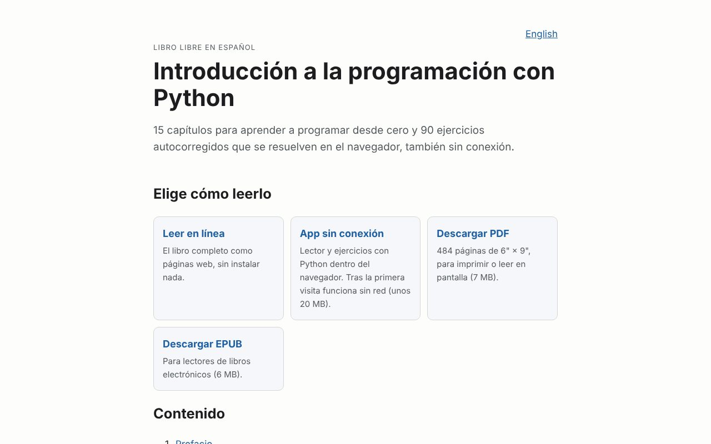
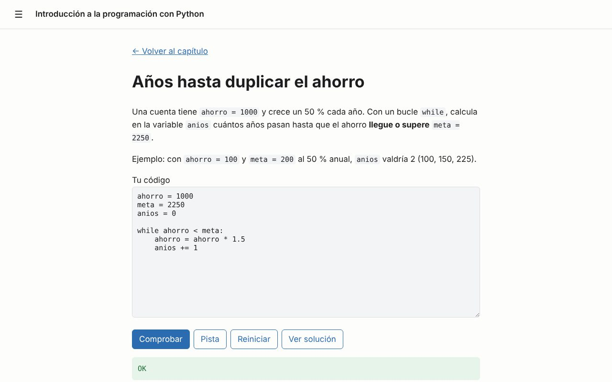
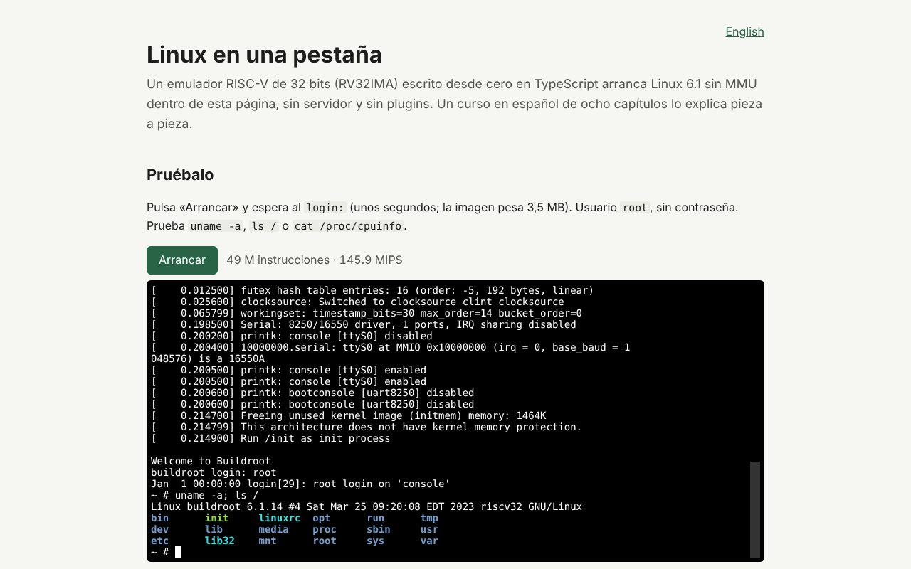
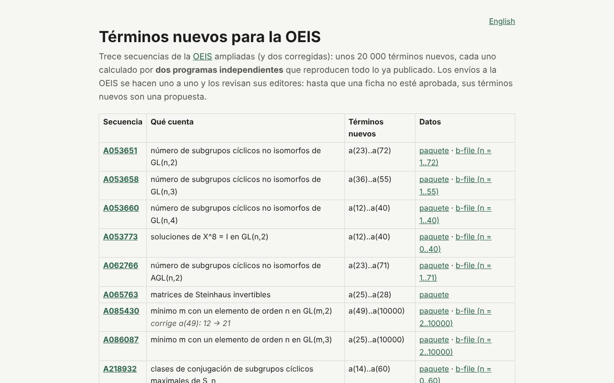

Enrique's projects
Three free projects: a book to learn Python (in Spanish), a RISC-V computer that boots Linux inside the browser, and new computations for the On-Line Encyclopedia of Integer Sequences.
-
Introducción a la programación con Python
A free Spanish-language textbook: 15 chapters and 90 self-checking exercises solved in the browser with real Python (Pyodide), offline too. Read it online, install it as an app or download the PDF and EPUB. It is an adapted translation of an open textbook by OpenStax.

Home page: four ways to read it. 
An exercise checked in the browser. -
Linux en una pestaña (Linux in a tab)
A 32-bit RISC-V emulator written from scratch in TypeScript that boots Linux 6.1 in the page, with no server and no plugins, plus an eight-chapter course in Spanish that explains every piece: instructions, memory, interrupts, the serial device and the boot.

Linux booted in the tab, with uname -a. -
New terms for the OEIS
Thirteen OEIS sequences extended, with about 20,000 new terms, and two corrected. Every term was computed by two independent programs that reproduce all published terms. Most count things in matrix groups over finite fields and cyclic subgroups of the symmetric and alternating groups. Submissions are made one at a time and reviewed by the OEIS editors.

The thirteen sequences and their data.